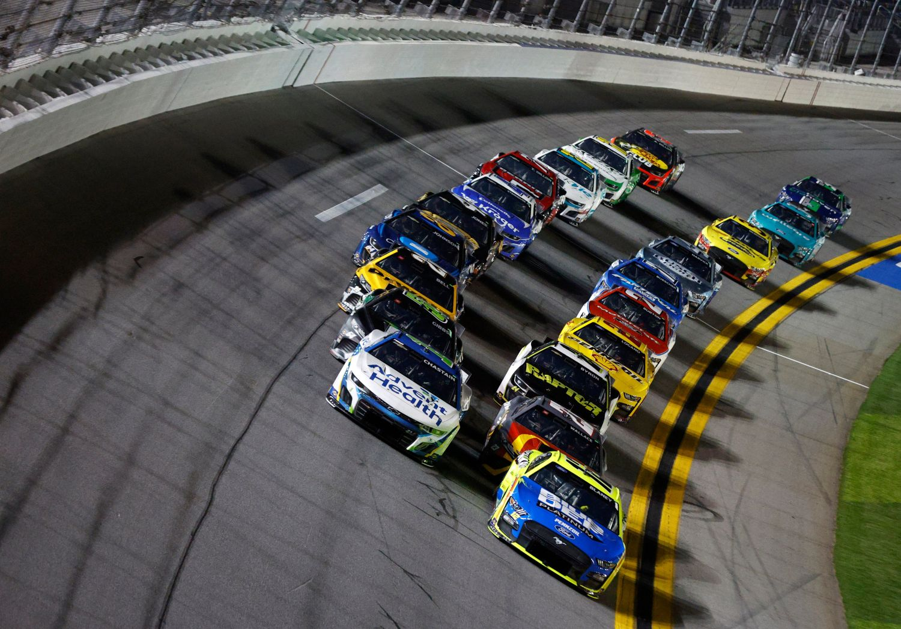
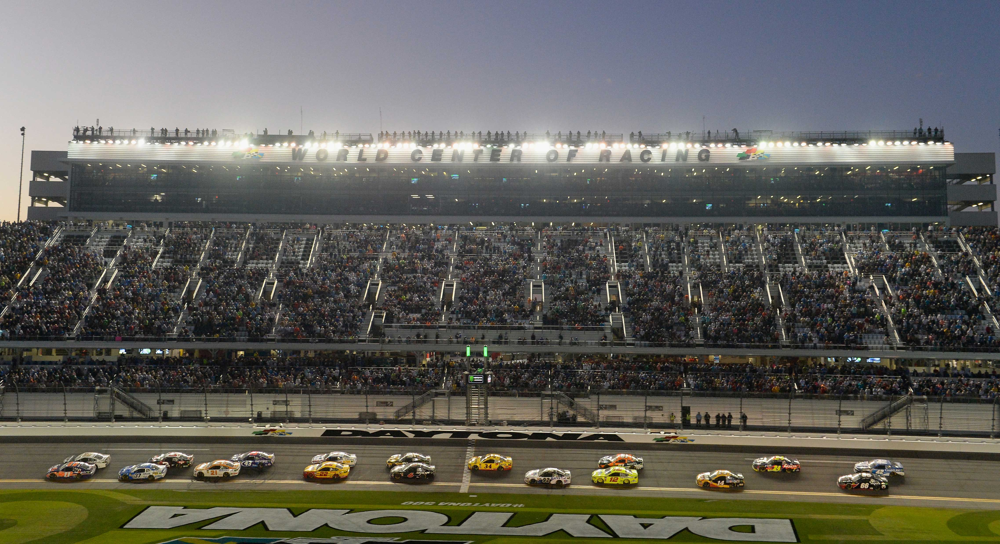
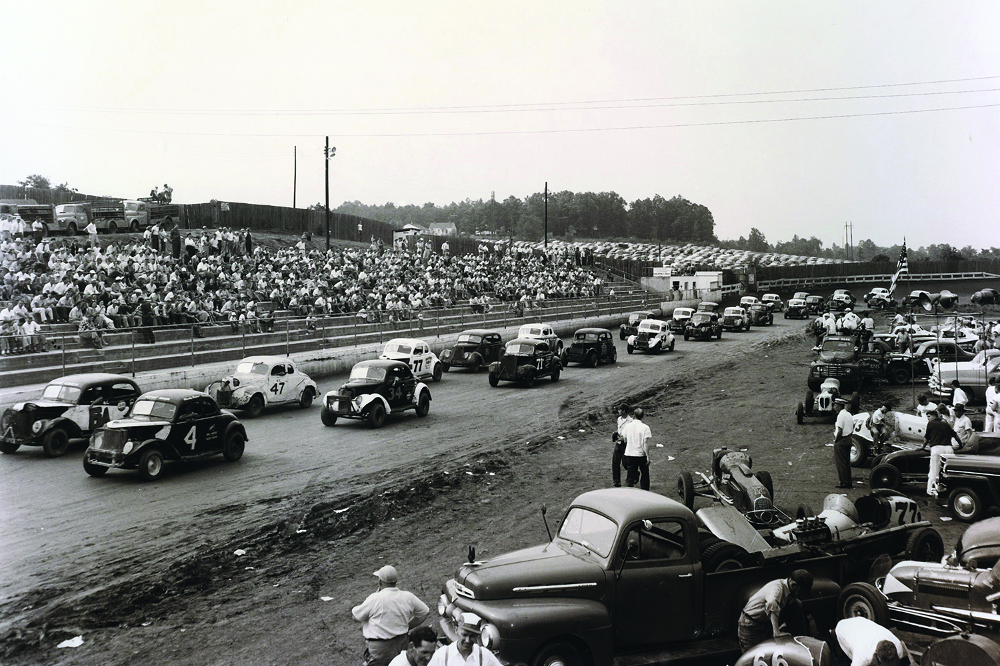
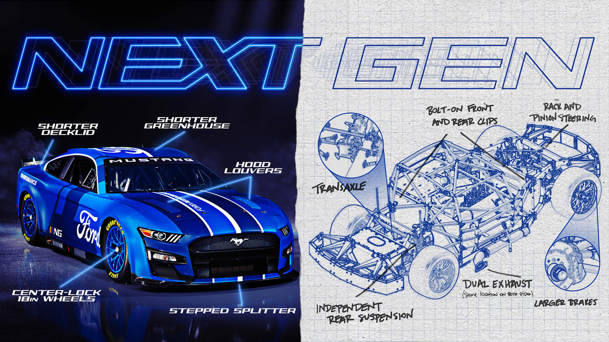
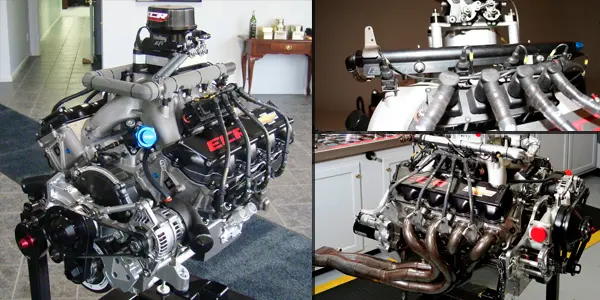
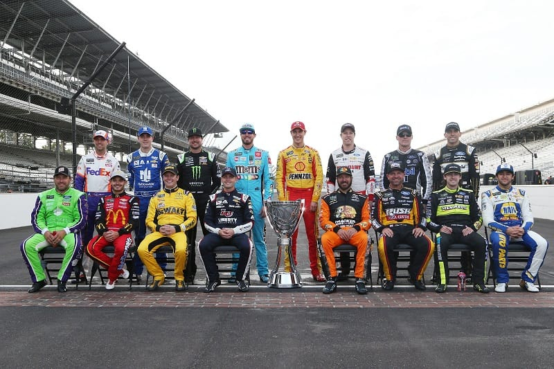
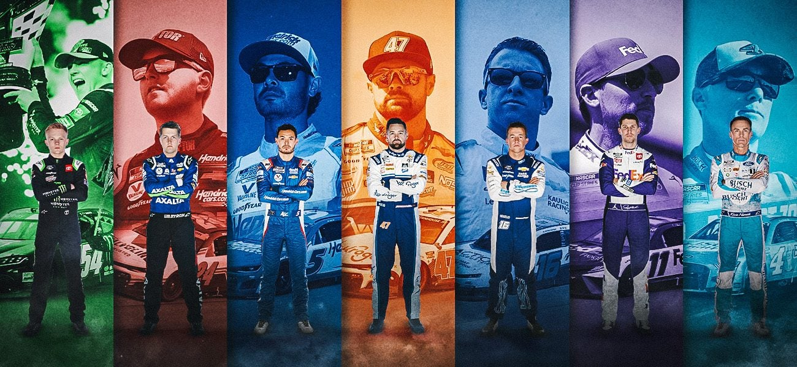

<!DOCTYPE html>
<html lang="en">
<head>
    <meta charset="UTF-8">
    <meta name="viewport" content="width=device-width, initial-scale=1.0">
    <title>Motorsport37 - Stock Car</title>
    <link rel="stylesheet" href="../CSS/reset.css">
    <link rel="stylesheet" href="../CSS/categoria.css">
</head>
</html>
<body>
    <header>
      
            <nav>
                <ul>
                    <li><a href="../index.html">Início</a></li>
                    <li><a href="formula1.html">Formula 1</a></li>
                    <li><a href="motogp.html">MotoGP</a></li>
                    <li><a href="wec.html">WEC</a></li>
                    <li><a href="indy.html">IndyCar</a></li>
                    <li><a href="wrc.html">WRC</a></li>
                    <li><a href="formulad.html">Formula Drift</a></li>
                    <li><a href="nascar.html">Nascar</a></li>
                    <li><a href="game.html">Game</a></li>
                    <li><a href="creditos.html">Créditos</a></li>
                </ul>
            </nav>
            
    </header>

    <div class="conteudo">
        <header>
            <h1>Nascar</h1>
        </header>

        <h2>Como funciona a Nascar</h2>

        <p>A NASCAR é uma competição de automobilismo predominantemente oval, popular nos Estados Unidos. Carros stock car participam
           em corridas em ovais de diferentes tamanhos. A NASCAR destaca-se pelo contato próximo entre os carros, estratégias táticas
           e corridas emocionantes. A competição inclui séries como a Cup Series, onde pilotos e equipes buscam a vitória nas corridas e o título do campeonato.</p>

        

        <h2>Onde a Nascar corre</h2>

        <p>A NASCAR realiza corridas em diversos locais nos Estados Unidos, incluindo pistas ovais, mistas e superestradas. Alguns circuitos famosos
           são o Daytona International Speedway, Charlotte Motor Speedway, Bristol Motor Speedway, Talladega Superspeedway e Indianapolis Motor Speedway.
           Essa variedade de pistas e formatos contribui para a emoção e desafio da competição na NASCAR.</p>

           

        <h2>Quando a Nascar começou</h2>

        <p>A NASCAR (National Association for Stock Car Auto Racing) foi fundada em 21 de fevereiro de 1948, por Bill France Sr. em Daytona Beach,
           Flórida. A primeira corrida da NASCAR ocorreu no mesmo ano, em 19 de junho de 1949, no Charlotte Speedway, na Carolina do Norte. Essa
           corrida inaugural foi vencida por Jim Roper. Desde então, a NASCAR cresceu para se tornar uma das principais séries de corridas automobilísticas
           nos Estados Unidos.</p>

            

        <h2>Como funcionam os carros da Nascar</h2>

        <p>Os carros da NASCAR são projetados para corridas de alto desempenho em pistas ovais, apresentando chassis tubulares de aço, motores V8
           carburados de alto desempenho, aerodinâmica otimizada com spoilers e difusores, pneus específicos para corridas ovais, transmissões
           manuais de quatro marchas, suspensões ajustadas para pistas ovais, freios potentes e uso de gasolina como combustível. Essas características
           visam proporcionar corridas emocionantes, onde a habilidade do piloto, estratégia de equipe e ajustes precisos no carro desempenham papéis
           críticos no sucesso da corrida.</p>

            

        <h2>Qual o motor da Nascar</h2>

        <p>Os carros da NASCAR utilizam motores V8. Esses motores são conhecidos por sua potência e desempenho robusto, essenciais para as corridas
           de alta velocidade nas pistas ovais. A configuração V8 refere-se ao número de cilindros e à disposição em forma de "V" dos pistões.
           Esses motores são carburados, o que significa que utilizam carburadores para misturar o combustível com o ar antes de entrar nos cilindros,
           uma característica distintiva em comparação com os motores de injeção direta encontrados em muitos carros de rua modernos. A potência considerável
           desses motores V8 contribui para as velocidades impressionantes alcançadas durante as corridas da NASCAR.</p>

           

        <h2>Quantos pilotos e equipes competem na Nascar</h2>

        <p>A NASCAR (National Association for Stock Car Auto Racing) é composta por várias séries, sendo as mais proeminentes a Cup Series, Xfinity Series e
           Camping World Truck Series.</p>

        <p>Na Cup Series da NASCAR, existem 36 carros no grid em cada corrida. Cada equipe pode inscrever até quatro carros, mas o número real de equipes
           pode variar ao longo da temporada devido a diferentes arranjos e patrocínios. Isso significa que, em uma corrida típica, você terá 36 carros
           competindo, mas esses carros podem representar várias equipes diferentes.</p>

           

        <p>Portanto, o número total de pilotos e equipes na NASCAR Cup Series pode variar ao longo da temporada com base em entradas e saídas de equipes
             e patrocinadores. A dinâmica pode mudar de ano para ano, mas as corridas geralmente apresentam um campo competitivo e diversificado de equipes e pilotos.</p>

        <h2>Quem são os pilotos de Nascar mais bem-sucedidos de todos os tempos</h2>

        <p>Ao longo da rica história da NASCAR, vários pilotos se destacaram, cada um contribuindo de maneira única para o sucesso da categoria.
           Alguns dos mais notáveis incluem Richard Petty, Dale Earnhardt, Jimmie Johnson, Jeff Gordon, David Pearson, Cale Yarborough, Darrell
           Waltrip e Kyle Busch. Suas conquistas, personalidades e impacto na NASCAR variam, destacando a diversidade de contribuições ao longo dos anos.
           A avaliação dos "melhores" pilotos pode variar conforme os critérios específicos considerados.</p>

           

           <footer>
            <p>&copy; 2023 MilenaNovka. Todos os direitos reservados.</p>
        </footer>

</body>